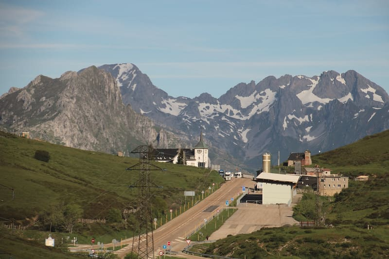
Pola de Lena · Camino del Salvador
Todos los caminos llevan a Roma.
Albergue en Pola de Lena, a 250 m del Camino del Salvador. Al final de la bajada de Pajares.
Registro de 13:00 a 21:00 sin hora de cierre
El albergue, en cifras
Lo que importa cuando llegas con la mochila
- 250 mdel Camino del Salvador
- 13:00abre el registro
- sin hora de cierrete damos un código para entrar
- 20 camasen 2 dormitorios con literas
- 6habitaciones privadas, dobles y cuádruples
- desde 15 €la cama, con ropa de cama
Para peregrinos y para quien viene a Lena: el albergue no es solo del Camino. Abierto todo el año, en el centro de La Pola, a unos 200 m de la estación de tren.
El albergue, de un vistazo
| Plazas | 20 camas en 2 dormitorios con literas · 6 habitaciones privadas (dobles y cuádruples) |
|---|---|
| Precios desde | 15 € la cama · 35 € la doble · 55 € la cuádruple (por noche) |
| Registro | de 13:00 a 21:00 (por confirmar) |
| Cierre | sin hora de cierre: te damos un código |
| Servicios | cocina de uso libre con microondas y nevera · lavadora y secadora · taquillas con llave · ropa de cama · guarda bicis cubierto · jardín · accesible |
| Distancias | 250 m al Camino del Salvador · unos 200 m a la estación de Pola de Lena · 13,6 km a Mieres (etapa siguiente) |
| Abierto | todo el año · para peregrinos y para quien viene a Lena |
| Contacto | 677 856 645 · albergueroma@gmail.com |
Habitaciones
Cada puerta, un pueblo de Lena
En cada puerta, un cartel de madera con el nombre de un pueblo del concejo. Dos dormitorios con literas y seis habitaciones privadas.
-
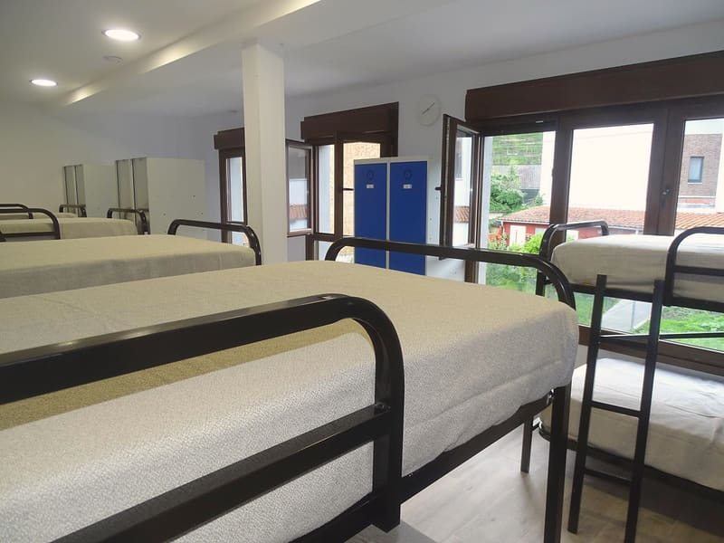
Pajares
Dormitorio compartido, con literas
10 plazasdesde 15 € la cama
-
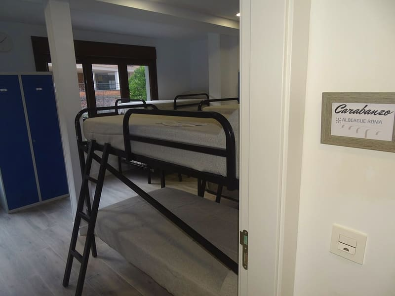
Carabanzo
Dormitorio compartido, con literas
10 plazasdesde 15 € la cama
-
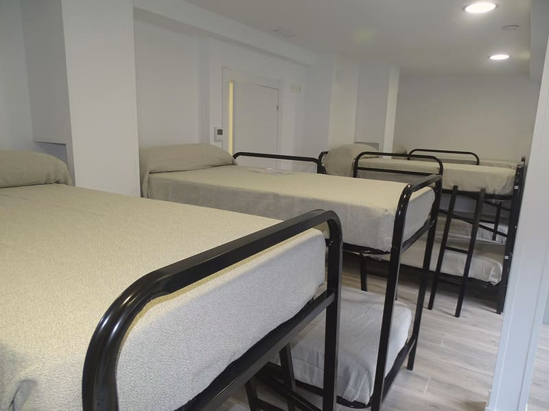
Santa Marina
Habitación cuádruple, dos literas
4 plazasdesde 55 € la habitación
-
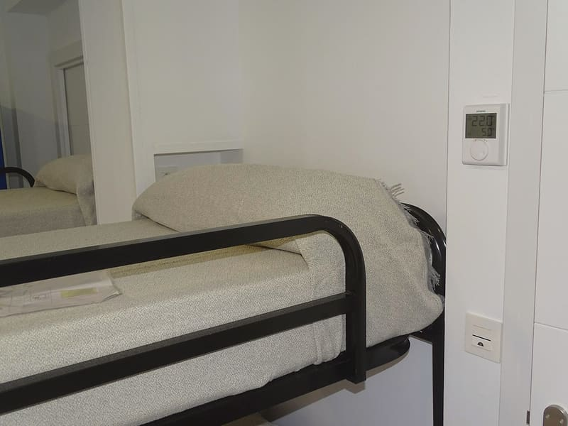
Llanos de Somerón
Habitación cuádruple, dos literas
4 plazasdesde 55 € la habitación
-
Herías
Habitación cuádruple, dos literas
4 plazasdesde 55 € la habitación
-
Campomanes
Habitación cuádruple, dos literas
4 plazasdesde 55 € la habitación
-
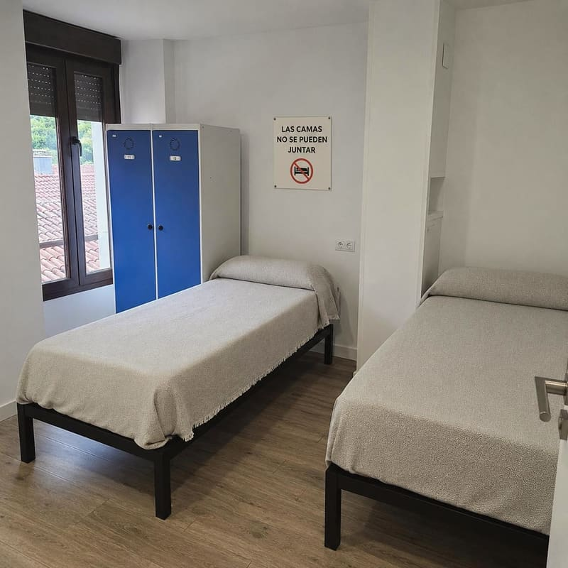
Fresneo
Habitación doble, dos camas
2 plazasdesde 35 € la habitación
-
Vega del Ciego
Habitación doble, dos camas
2 plazasdesde 35 € la habitación
De los carteles solo conocemos «Carabanzo»: los demás nombres y el reparto de las seis privadas son de ejemplo, a confirmar con el albergue.
Lo que hay
Cocina libre, lavadora y una taquilla con llave
Lo justo después de una etapa larga: dónde cocinar, dónde lavar la ropa y dónde dejar la mochila y la bici.
- Cocina de uso librecon microondas y nevera
- Lavadora y secadorapregunta el precio al llegar
- Taquillas individualescon llave
- Ropa de camaincluida
- Guarda bicis cubiertopara quien hace el camino en bici
- Jardínpara tender y estirar las piernas
- Accesiblepara personas con movilidad reducida
- Calefacciónen las habitaciones
«Pregunta el precio»: algunos servicios tienen coste aparte y no sabemos cuáles; lo dirá el albergue.
La bajada de Pajares
De la nieve del puerto a tu litera
Del Puerto de Pajares a la puerta del albergue hay 28,3 km por el Camino del Salvador: de 1.377 m a 316 m. Bajas de la cordillera por viejas veredas entre aldeas, hasta el río Lena. Y acaba aquí.
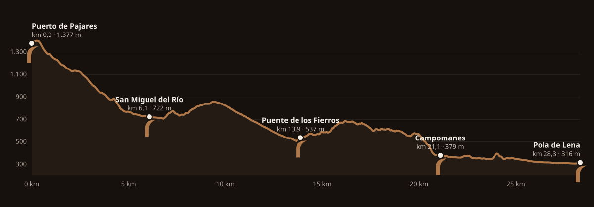
- Puerto de Pajareskm 0,0 · 1.377 m
- San Miguel del Ríokm 6,1 · 722 m
- Santa Marinakm 7,2 · 767 m
- Llanos de Somerónkm 9,4 · 857 m
- Puente de los Fierroskm 13,9 · 537 m
- Fresneokm 14,5 · 565 m
- Heríaskm 19,5 · 554 m
- Campomaneskm 21,1 · 379 m
- Santa Cristina de Lenakm 24,0 · 392 m
- Vega del Ciegokm 25,8 · 326 m
Las guías (Gronze) dan la etapa 4 desde el pueblo de Pajares: 23,8 km, 595 m de subida y 1.273 m de bajada. Aquí se cuenta desde el puerto, donde acaba la etapa 3. Trazado según OpenStreetMap y altitudes del MDT05 del IGN: las flechas del camino mandan.
Ver camas libresLena alrededor
Lo que has visto hoy, y lo que tienes cerca
Del puerto a La Pola el camino pasa por aldeas con galería, prados con caballos y una iglesia prerrománica.
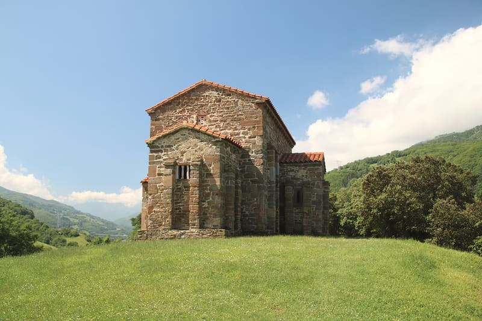
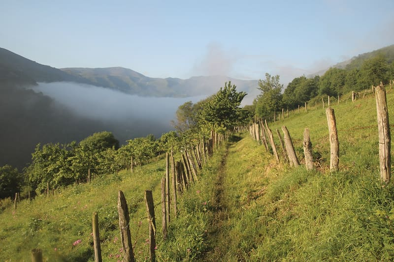
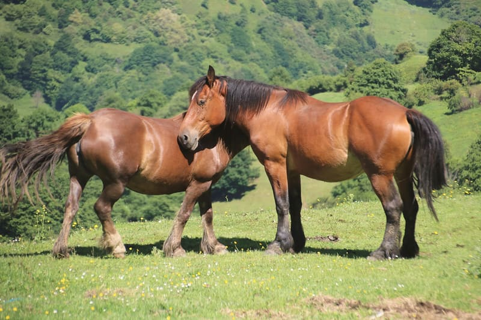
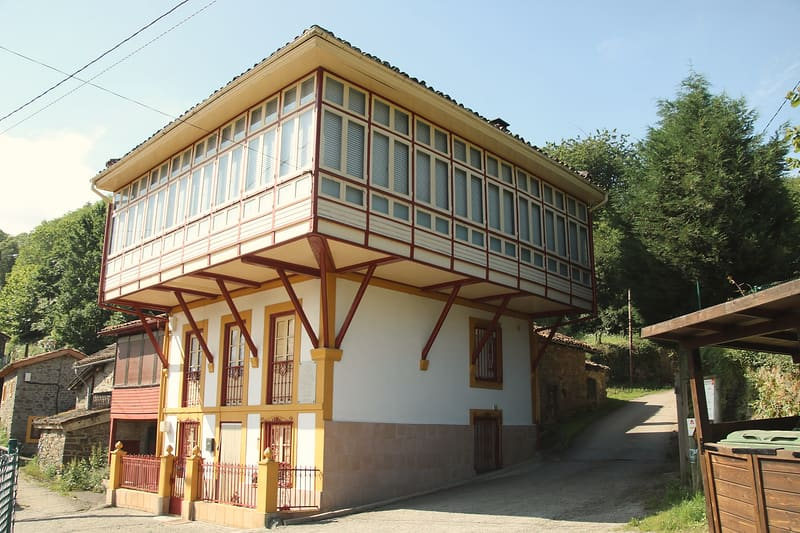
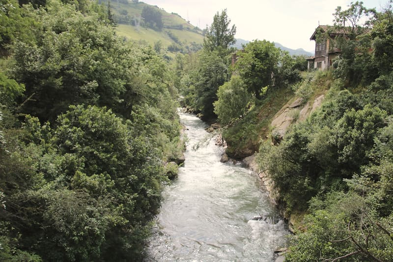
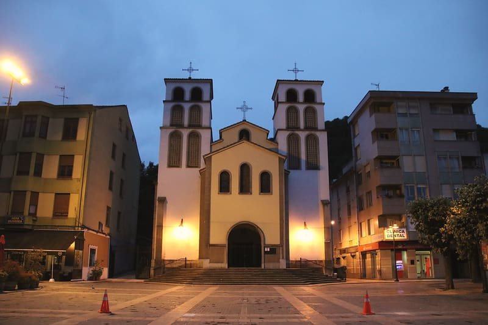
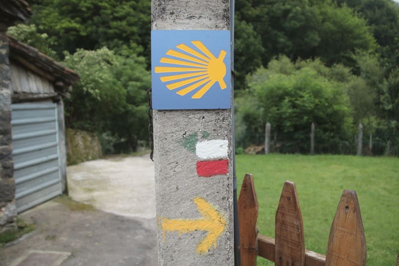
Y mañana
A Mieres: 13,6 km, llana, junto al río.
La etapa 5 sigue los ríos Lena y Caudal, casi toda sobre asfalto. Desde Mieres, la última etapa llega a Oviedo.
Reservar
Tu cama, noche a noche
Elige las noches y luego la cama en el plano: arriba o abajo, en uno de los dos dormitorios. O una habitación privada entera. También puedes llamar al 677 856 645 o escribir a albergueroma@gmail.com.
Demostración. Así funcionaría la reserva directa: la ocupación es de ejemplo, los precios son los «desde» de Gronze y no se envía, se guarda ni se cobra nada.
Lo que hay que saber
- Registro
- De 13:00 a 21:00. Por confirmar: en otra ficha pone de 15:00 a 22:00.
- Hora de cierre
- No hay. Al llegar te dan un código para entrar y salir.
- Ropa de cama
- Incluida en el precio.
- Pago
- A la llegada (supuesto, a confirmar con el albergue).
- Para quién
- Para peregrinos y para quien viene a Lena. Hablan español e inglés.
- Abierto
- Todo el año.
Cómo llegar
C/ Canuto Hevia, 12 · La Pola
Albergue RomaC/ Canuto Hevia, 12
33630 La Pola (Lena), Asturias
- A pieA 250 m del Camino del Salvador.
- En trenLa estación de Pola de Lena está a unos 200 m.
- En cocheSin aparcamiento propio (por confirmar).